Multipath TCP
Multipath TCP [15] is an extension to the TCP protocol [4] that was described in chapter The Transmission Control Protocol (TCP). We start with an overview of Multipath TCP. Then we explain how a Multipath TCP connection can be established. Then we analyze how data is exchanged over different paths and explain the multipath congestion control schemes. Finally, we explain how Multipath TCP connections can be terminated.
A brief overview of Multipath TCP
The main design objective for Multipath TCP [8] was to enable hosts to exchange the packets that belong to a single TCP connection over different network paths. Several definitions are possible for a network path. Considering a TCP connection between a client and a server, a network path can be defined as the succession of the links and routers that create a path between the client and the server. For example, in Fig. 11, there are many paths between the client host C and the server S, e.g. \(C \rightarrow R1 \rightarrow R2 \rightarrow R4 \rightarrow S\) and \(C \rightarrow R1 \rightarrow R3 \rightarrow R4 \rightarrow S\), but also \(C \rightarrow R1 \rightarrow R3 \rightarrow R5 \rightarrow R4 \rightarrow S\) or even \(C \rightarrow R1 \rightarrow R2 \rightarrow R4 \rightarrow R3 \rightarrow R5 \rightarrow R4 \rightarrow S\).

Fig. 11 A simple network providing multiple paths between \(C\) and \(S\)
During the first discussions on Multipath TCP within the IETF, there was a debate on the types of paths that Multipath TCP could use in IP networks. Although networks provide a wide range of paths between a source and a destination, it is not necessarily simple to use all these paths in a pure IP network. Looking a Fig. 11 and assuming that all links have the same IGP weight, packets sent by C will follow one of the two shortest paths, i.e. \(C \rightarrow R1 \rightarrow R2 \rightarrow R4 \rightarrow S\) or \(C \rightarrow R1 \rightarrow R3 \rightarrow R4 \rightarrow S\). Since routers usually use hash-based load-balancing [11] to distribute packets over equal cost paths, all the packets from a given connection will follow either the first or the second shortest path. In most networks, the path followed by a TCP connection will only change if there are link or router failures on this particular path.
When Multipath TCP was designed, the IETF did not want to design techniques to enable the transport layer to specify the paths that packets should follow. They opted for a very conservative definition of the paths that Multipath TCP can use [16]. Multipath TCP assumes that the endpoints of a TCP connection are identified by their IP addresses. If two hosts want to exchange packets over different paths, then at least one of them must have two or more IP addresses. This covers two very important use cases:
mobile devices like the smartphones that have a cellular and a Wi-Fi network interface each identified by its own IP address
dual-stack hosts that have both an IPv4 and an IPv6 address
In this document, we will often use smartphones to illustrate Multipath TCP client hosts. This corresponds to a widely deployed use case that simplifies many of the examples, but is not the only possible deployment.
Note
Using non-equal cost paths with Multipath TCP
When Multipath TCP was designed, there was no standardized solution that enabled a host to control the path followed by its packets inside a network. This is slowly changing. First, the IETF has adopted the Segment Routing architecture [17]. This architecture is a modern version of source routing which can be used in MPLS and IPv6 networks. In particular, using the IPv6 Segment Routing Header [18], a host can decide the path that its packets will follow inside the network. This opens new possibilities for Multipath TCP. Some of these possibilities are explored by the Path Aware Networking Research Group of the Internet Research Task Force.
A second important design question for the Multipath TCP designers was how use two or more paths for a single connection ? As an example, let us consider a smartphone that interacts with a server. This smartphone has two different IP addresses: one over its Wi-Fi interface and one over its cellular interface. A naive way to use these two networks would be to operate as shown Fig. 12. The smartphone would initiate a TCP connection over its Wi-Fi interface as shown in blue in Fig. 12. This handshake creates a connection and thus some shared state between the smartphone and the server. Given this state, could the smartphone simply sent the next date over the cellular interface (shown in red in Fig. 12) ?
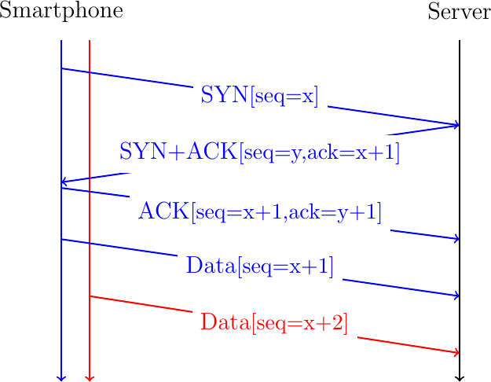
Fig. 12 A naive approach to create a Multipath TCP connection
Unfortunately, this utilization of the two paths between the smartphone and the server poses different problems. First, the server must be able to accept the packet sent by the smartphone over the cellular interface and associate it with the connection created over the Wi-Fi interface. However, the packets sent over the cellular interface use a different source address than those sent over the Wi-Fi interface. When the server receives such a packet, how can it be associated with an existing connection ? If the server blindingly accept this packet from another address than the one used during the handshake, then there are obvious security risks. By sending a single packet, an attacker could inject data inside an existing connection. Furthermore, he could cause a denial of service attack by sending a spoofed packet in an existing connection that requests the server to send a large volume of data to the spoofed address. Furthermore, a middlebox such as a firewall on the cellular path between the smartphone and the server could block the packet because it does not belong to a TCP connection created on the cellular path.
To cope with this problem, the Multipath TCP designers opted for an architecture where a Multipath TCP connection combines several TCP connections that are called subflows over the different paths. In the above example, the smartphone would first create a connection over the Wi-Fi interface. It would later initiate a TCP connection over its cellular interface and use Multipath TCP to link it to the connection created over the Wi-Fi interface.
A Multipath TCP connection starts with a three-way handshake like a regular TCP connection. As with all TCP extensions, the client uses an option in the SYN to indicate its willingness to use the multipath extensions. The server confirms that it agrees to use this extension by sending the same option in the SYN+ACK. This is illustrated in Fig. 13 where the client sends a SYN with the MPC option to negotiate a Multipath TCP connection with a server. If the server replies with the same option, the handshake succeeds and creates the first subflow belonging to this Multipath TCP connection. The client and the server can send data over this connection as over any TCP connection. To use a second path, the client (or the server), must initiate another TCP handshake over the new path. The SYN sent over this second path uses the MPJ option to indicate that this is an additional subflow that must be linked to an existing Multipath TCP connection. This is illustrated in Fig. 13.
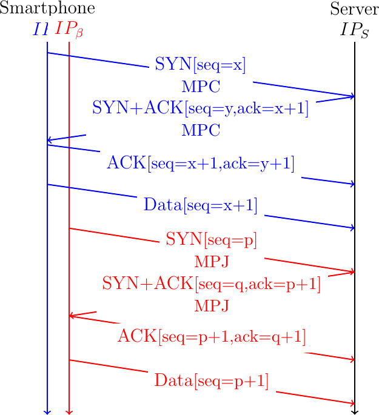
Fig. 13 A Multipath TCP connection with two subflows
These two three-way handshakes create two TCP connections called subflows in the Multipath TCP terminology. It is useful to analyze how these two connections are identified on the server. A host identifies a TCP connection using four identifiers that are present in all the packets of this connection:
the local IP address
the remote IP address
the local port
the remote port
Assume that the client uses IP address \(IP_{\alpha}\) on its Wi-Fi interface and \(IP_{\beta}\) on its cellular interface and that \(p\) is the port used by the server. If the client used port \(p_1\) to create the initial subflow, then the identifier of this subflow on the server is \(<IP_{S},IP_{\alpha},p,p_{1}>\). Similarly, the second subflow is identified by the \(<IP_{S},IP_{\beta},p,p_{2}>\) tuple on the server. Note that these two connection identifiers differ by at least one IP address as specified in [16].
A server usually manages a large number of simultaneous connections. Furthermore, a client may establish several connections with the same server. To associate a new subflow with an existing Multipath TCP connection, a server must be able to link an incoming SYN with the corresponding Multipath TCP connection. For this, the client must include an identifier of the associated Multipath TCP connection in its MPJ option. This identifier must unambiguously identify the corresponding Multipath TCP connection on the server.
A first possible identifier is the four tuple that identifies the initial subflow, i.e. \(<IP_{S},IP_{\alpha},p,p_{1}>\). If the server received this identifier in the MPJ option, it could link the new subflow to the previous one. Unfortunately, this solution does not work in today's Internet. The main concern comes from the middleboxes such as NATs and transparent proxies. To illustrate the problem, consider a simple NAT, such as the one used on most home Wi-Fi access points. Fig. 14 illustrates a TCP handshake in such an environment.
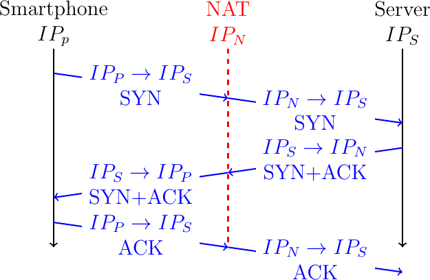
Fig. 14 Network Address Translation interferes with TCP
The smartphone uses a private IP address, \(IP_{P}\) and the NAT uses a public address \(IP_{N}\). If we assume that the NAT only changes the client's IP address, then the connection is identified by the \(<IP_{P},IP_{S},p,p_{1}>\) tuple on the smartphone and \(<IP_{S},IP_{N},p,p_{1}>\) on the server. Note some NATs also change the client port. If the smartphone places its local connection identifier inside an MPJ option, the server might not be able to recognize the corresponding connection in the SYN packets that it received.
To cope with this problem, Multipath TCP uses a local identifier, called token in the Multipath TCP specification, to identify each Multipath TCP connection. The client assigns its token when it initiates a new Multipath TCP connection. A server assigns its token when it accepts a new Multipath TCP connection. These two tokens are chosen independently by the client and the server. For security reasons, these tokens should be random. The MPJ option contains the token assigned by the remote host. This is illustrated in Fig. 15. The server assigns token 456 to the Multipath TCP connection created as the first subflow. It informs the smartphone by sending this token in its MPC option in the SYN+ACK. When the client creates the second subflow, it includes its token in the MPJ option of its SYN.
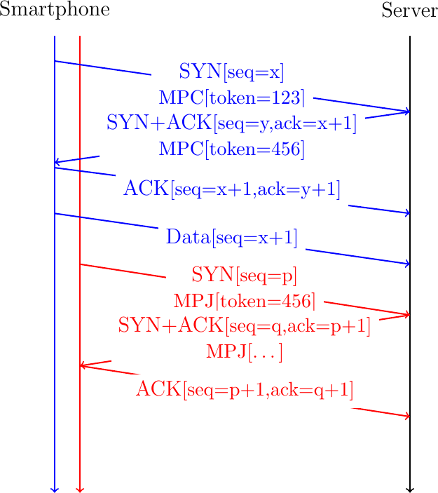
Fig. 15 The tokens exchanged during the handshake allow to associate subsequent subflows to existing Multipath TCP connections
Note
Multipath TCP in datacenters
The Multipath TCP architecture [16] assumes that at least one of the communicating hosts use different IP addresses to identify the different paths used by a Multipath TCP connection. In practice, this architectural requirement is not always enforced by Multipath TCP implementations. A Multipath TCP implementation can combine different subflows into one Multipath TCP connection provided that each subflow is identified by a different four-tuple. Two subflows between two communicating hosts can differ in their client-selected ports. This solution has been chosen when Multipath TCP was proposed to mitigate congestion in datacenter networks [10].
Several designs exist for datacenter networks, but the fat-tree architecture shown in Fig. 16 is a very popular one.
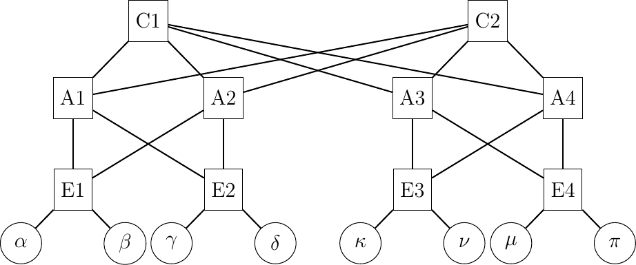
Fig. 16 A simple datacenter network
This network topology exposes a large number of equal cost paths between the servers that are shown using circles in Fig. 16. For example, consider the paths between the \(\alpha\) and \(\pi\) hosts. The paths start at \(E1\). This router can reach \(E4\) and \(\pi\) via \(A1\) or \(A2\). Each of these two aggregation routers can reach \(\pi\) via one of the two core routers. These two routers can then balance the flows via both \(A3\) and \(A4\). There are \(2^{4}=16\) different paths between \(\alpha\) and \(\pi\) in this very small network. If each of these routers balance the incoming packets using a hash function [11] that takes as input their source and destination addresses and ports, then the subflows of a Multipath TCP connection that use different client problems will be spread evenly across the network topology. Raiciu et al. provide simulations and measurements showing the benefits of using Multipath TCP in datacenters [10].
Once a Multipath TCP connection and the additional subflows have been established, we can use them to exchange data. An important point to remember is that a Multipath TCP connection provides a bidirectional bytestream service like a regular TCP connection. This service does not change even if Multipath TCP uses different subflows to carry the data between the sender and the receiver. As an example, consider a sender that sends ABCD one byte at a time over a Multipath TCP connection composed of two subflows. A naive approach to send these bytes would be to simply placed them in different TCP segments. This is illustrated in Fig. 17 where we assume that the two TCP subflows have already been established.

Fig. 17 A naive approach to send data over a Multipath TCP connection
In this example, the Smartphone slowly sends data in sequence. The server receives the data in sequence over the two subflows and the server could simply deliver the data as soon as it arrives over each subflow. This is illustrated with the DATA.ind(...) primitives that represent the delivery of the data to the server application. However, consider now that the first packet sent on the red subflow is lost and is retransmitted together with the fourth byte as shown in Fig. 18.

Fig. 18 A naive approach to send data over a Multipath TCP connection
In Fig. 18, it is clear that the server cannot simply deliver the data as soon as it receives it to its application. If the server behaves this way, it will deliver ACBD to its application instead of the ABCD bytestream send by the smartphone. To cope with the reordering of the data sent over the different subflows, Multipath TCP includes bytestream-level data sequence numbers that enable it to preserve the ordering of the data sent over the bytestream. This is illustrated in Fig. 19 with the bytestream-level sequence number shown as bseq. We will detail later how this sequence number is exactly transported by Multipath TCP.

Fig. 19 A naive approach to send data over a Multipath TCP connection
Thanks to the bytestream sequence number, the server can reorder the data received over the different subflows and preserve the ordering in the bytestream.
Creating a Multipath TCP connection
Before delving into the details of how a Multipath TCP connection is created, let use first analyze the main requirements of this establishment and how they can be met without considering all the protocol details. During the three-way handshake, TCP hosts agree to establishment a connection, select the initial sequence number in each direction and negotiate the utilization of TCP extensions. In addition to these objectives, the handshake used by Multipath TCP also allows the communicating hosts to:
agree to use the Multipath TCP extension
exchange the tokens used to identify the connection
agree on initial bytestream sequence numbers
To meet the first objective, the client simply needs to send a Multipath TCP option (MPO) in its SYN. If the server supports Multipath TCP, it will respond with a SYNC+AC that carries this option.
To meet the second objective, the simplest solution is reserve some space, e.g. 64 bits, in the MPO option to encode the token chosen by the host that sends the SYN or SYN+ACK. With this approach, each host can autonomously select the token that it uses to identify each Multipath TCP connection. To meet the third objective, the simplest solution is also to place the initial sequence number in the MPO option. Fig. 20 illustrates a handshake using the MPO option.
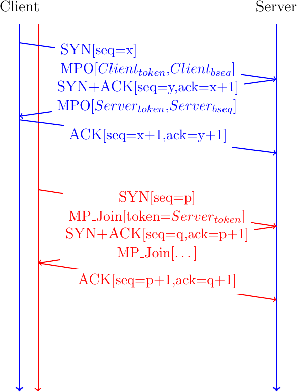
Fig. 20 Opening a Multipath TCP connection with a MPO option
The Multipath TCP working group was worried about the risk of attacks with this approach. When the smartphone creates an additional subflow, it includes the token allocated by the server inside the MP_JOIN option. This token serves two different purposes. First, it identifies the relevant Multipath TCP connection on the server. Second, it also "authenticates" that the SYN also originates from this client. Authenticating the client is a key concern from a security viewpoint. The main risk is that an on-path attacker who has observed the token in the MP_JOIN option can reuse it to create additional subflows from any other source. To cope with this problem, Multipath TCP relies on a shared secret that the client and the server exchange during the initial handshake. The client proposes one halve of the secret and the server the other halve. This is illustrated in Fig. 21. The client proposes its part of the shared secret in the SYN (\(Client_{secret}\)). The server replies with its part of the secret in the SYN+ACK.

Fig. 21 Creating a Multipath TCP connection with a MPO option
Using these two components of the shared secret, the client and the server must be able to authenticate the additional subflows without revealing the shared secret to an attacker who is able to capture packets on the path of the additional subflow. Multipath TCP requires each host to perform a HMAC [19] of a random number to confirm their knowledge of the shared secret. This is illustrated in the second part of Fig. 21. To create the additional subflow, the client send a SYN with the MP_JOIN option containing the \(Server_{token}\) and a random nonce, \(Client_{random}\). The server confirms the establishment of the subflow by sending a SYN+ACK containing the HMAC computed using the \(Client_{random}\) and the \(Client_{secret}\) and \(Server_{secret}\) input. Thanks to this HMAC computation, the server can reveal that it knows \(Client_{secret}\) and \(Server_{secret}\) without explicitly sending them. The server also places a random number, \(Server_{random}\) in the MP_JOIN option of the SYN+ACK. The client computes a HMAC and returns it in the third ACK. With these two HMACs, the client and the server can authenticate the establishment of the additional subflow without revealing the shared secret.
Note
The security of Multipath TCP depends on the security of the initial handshake
The ability of correctly authenticate the addition of new subflows to a Multipath TCP connection depends on the secrecy of the \(Client_{secret}\) and \(Server_{secret}\) exchanged in the SYN and SYN+ACK of the initial handshake. An on-path attacker which is able to capture this initial handshake has all the information required to attach a new subflow to this Multipath TCP connection at any time. Multipath does not include the strong cryptographic techniques (besides HMAC) that would have been required to completely secure the establishment the protocol and the establishment of additional subflows in particular. This threat was considered acceptable for Multipath TCP [20] because an attacker who can capture the packets of a single path TCP connection can also inject data inside this connection. To be fully secure Multipath TCP would need to rely on cryptographic techniques that are similar to those used in Transport Layer Security [5].
The solution described above meets the requirements of the Internet Engineering Task Force. From a security viewpoint, the \(Client_{secret}\), \(Server_{secret}\) and the random nonces should be as large as possible to prevent attacks where their values are simply guessed. Unfortunately, since Multipath TCP uses TCP options to exchange all this information, we need to ensure that it fits inside the extended header of a TCP SYN. The TCP specification [4] reserves up to 40 bytes to place the TCP options in a SYN. Today's TCP stacks already consume 4 bytes for the MSS option [4], 3 for the Window Scale option [21], 2 for SACK Permitted [12] and 10 for the timestamp option [21]. This leaves only 20 bytes to encode a Multipath TCP option that must contain an initial sequence number, a token and a secret. Multipath TCP solves this problem by deriving these three values from a single field encoded in a TCP option. Let us now analyze the Multipath TCP handshake in more details.
The Multipath TCP handshake
A Multipath TCP connection starts with a three-way handshake like a regular TCP connection. To indicate that it wishes to use Multipath TCP, the client adds the MP_CAPABLE option to the SYN segment. In the SYN segment, this option only contains some flags and occupies 4 bytes. The server replies with a SYN+ACK segment than contains an MP_CAPABLE option including a server generated 64 bits random key that will be used to authenticate connections over different paths. The client concludes the handshake by sending an MP_CAPABLE option in the ACK segment containing the random keys chosen by the client and the server.

Fig. 22 Negotiating the utilization of Multipath TCP during the three-way handshake
Note
Multipath TCP version 0
The first version of Multipath TCP used a slightly different handshake [8]. The MP_CAPABLE option sent by the client contains the 64 bits key chosen by the client. The SYN+ACK segment contains an MP_CAPABLE option with 64 bits key chosen by the server. The client echoes the client and server keys in the third ACK of the handshake.
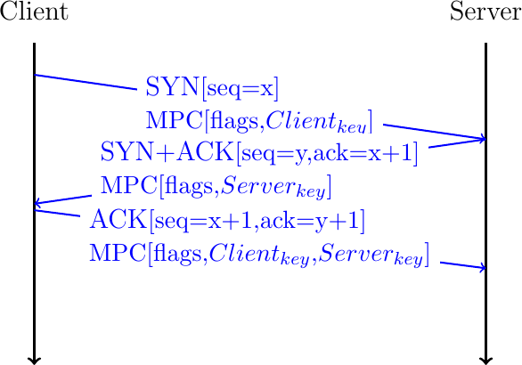
Fig. 23 Negotiating the utilization of Multipath TCP version 0
The 64 bits random keys chosen by the client and the server play three different roles in Multipath TCP. Their first role is to identify the Multipath TCP connection to which an additional connection must be attached. Since a Multipath TCP connection can combine several TCP connections, Multipath TCP cannot use the IP addresses and port numbers to identify a TCP connection. Multipath TCP uses a specific identifier that is called a token. For technical reasons, this token is derived from the 64 bits key as the most significant 32 bits of the SHA-256 [22] hash of the key. The second role of the 64 bits keys is to authenticate the establishment of additional connections as we will see shortly. Finally, the keys are also used to compute random initial sequence numbers.
The main benefit of Multipath TCP is that a Multipath TCP connection can combine different TCP connections that potentially use different paths. Starting from now on, we will consider a client with two network interfaces and a server with one network interface. This could for example correspond to a client application running on a smartphone that interacts with a server. We explore more complex scenarios later.
We can know explain how a Multipath TCP connection can combine different TCP connections. According to the Multipath TCP specification, these connections are called subflows [15]. We also adopt this terminology in this document. Fig. 24 shows a Multipath TCP that combines two subflows. To establish the Multipath TCP connection, the client initiates the initial subflow by using the MP_CAPABLE option during the three-way handshake. At the end of the initial handshake, the client and the server have exchanged their keys. Based on their keys, they have both computed the token that the remote host uses to identify the Multipath TCP connection.
To attach a second subflow to this Multipath TCP connection, the client needs to create it. For this, it starts a three-way handshake with the server by sending a SYN segment containing the MP_JOIN option. This option indicates that the client uses Multipath TCP and wishes to attach this new connection to an existing Multipath TCP connection. The MP_JOIN option contains two important fields:
the token that the server uses to identify the Multipath TCP connection
a random nonce
The client has derived the token from the key announced by the server in the MP_CAPABLE option of the SYN+ACK segment on the initial subflow. Thanks to this token, the server knows to which Multipath TCP connection the new subflow needs to be attached.
The server uses the random nonce sent by the client and its own random nonce to prove its knowledge of the keys exchanged during the initial handshake. The server computes \(HMAC(Key=(Server_{key}||Client_{key}), Msg=(nonce_{Server}||nonce_{Client}))\), where || denotes the concatenation operation. It then returns the high order 64 bits of this HMAC in the MP_JOIN option of the SYN+ACK segment together with its 32 bits nonce. The client computes \(HMAC(Key=(Client_{key}||Server_{key}), Msg=(nonce_{Client}||nonce_{Server}))\) and sends the 160 bits HMAC in the ACK segment.
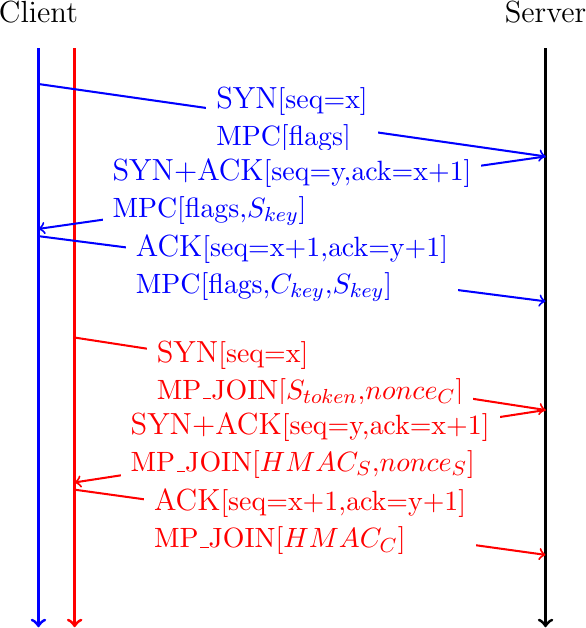
Fig. 24 A client creates a second subflow by creating a TCP connection with the MP_JOIN option
Note
Generating Multipath TCP keys
From a security viewpoint, the keys that Multipath TCP hosts exchange in the MP_CAPABLE option should be completely random to prevent them from being guessed by attackers. However, since the token is derived from the key, it cannot be completely random. A host will typically generate a random key and hash it into a token to verify that it does not correspond to an existing connection. On clients, with a few tens of connections, this is not a concern, but on servers, the delay to generate random keys increases with the number of established Multipath TCP connections [23]. This does not prevent servers from supporting large numbers of Multipath TCP connections [24].
A Multipath TCP connection combines a number of subflows which can change during the connection lifetime. It starts with an initial subflow, but this subflow may terminate before the connection. A Multipath TCP connection is a pair of states that are maintained on the client and the server.
The above figure shows how a client adds a subflow to an existing Multipath TCP connection. This is the most common way of adding subflows to a connection. According to the specification, a server could also add subflows to a Multipath TCP connection. For this, the server needs to be able to determine the client addresses. This is the role of the address subflow management parts of Multipath TCP.
Address and subflow management
Each Internet host has one address per network interface. A smartphone with active Wi-Fi and cellular interfaces has two network addresses. With the advent of IPv6, a large fraction of the hosts are dual-stack and have both an IPv4 and an IPv6 address for each network interface. Multipath TCP specifies options that allow a host to advertise all its addresses to the other host. Given the limited size of the TCP header, these options cannot be exchanged during the handshake. They are typically attached to packets that carry acknowledgments.
Each host maintains a list of its active addresses and associates a numeric identifier to each address. To advertise an address, the host simple adds the Multipath TCP ADD_ADDR option to one outgoing packet. This option contains four main fields:
the IPv4 or IPv6 address of the host
the numeric identifier of the address
an optional port number
a truncated HMAC to authenticate the address advertisement
The IP address is the main information contained in the ADD_ADDR option. The identifier allows the host to advertise the list of all its addresses one option at a time. The port number allows to indicate that the hosts listens to another port number than the one used for the subflow where the option is sent. This can be useful if a client wishes to accept subflows initiated by the server or if a server uses another port to listen for additional subflows. The HMAC is the 64 bits truncation of \(HMAC(Key=(Server_{key}||Client_{key}), Msg=(Address identifier||IP address|| port))\) when the server advertises an address and \(HMAC(Key=(Client_{key}||Server_{key}), Msg=(Address identifier||IP address|| port))\) for an address advertised by the client. The HMAC allows to prevent attacks where an attacker sends spoofed packets containing an ADD_ADDR option.
In addition to these four fields, the ADD_ADDR option contains an Echo bit. The ADD_ADDR option is usually sent inside a TCP acknowledgment. A host can easily send an acknowledgment even if it did not recently receive data. Unfortunately, TCP acknowledgments are, by design, unreliable. As TCP uses cumulative acknowledgments, the loss of an acknowledgment is compensated by the next acknowledgment. This is true for the acknowledgment number, but not for the options that were contained in the loss packet. The first version of Multipath TCP did not try to deal with the loss of ADD_ADDR options. The current version relies on the Echo. A host advertises an address by sending its ADD_ADDR option with the Echo bit set to 0. To confirm the reception of this address, the peer simply replies with an acknowledgment containing the same option but with its Echo bit set to one. A host that sent an ADD_ADDR option needs to retransmit it if it does not receive it back. This is illustrated in Fig. 25.

Fig. 25 Thanks to the Echo bit, a Multipath TCP host can retransmit lost ADD_ADDR options.
Thanks to the ADD_ADDR option, a host can advertise all its addresses at the beginning of a Multipath TCP connection. Since the option can be sent at any time, a mobile host that learns a new address, e.g. a smartphone attached to a new Wi-Fi network, can advertise it immediately. This makes Multipath TCP agile on mobile hosts. A host may also stop being able to use an IP address. This occurs when a mobile hosts goes away from a wireless network. In this case, the host should inform its peer about the loss of the corresponding address. This is the role of the REMOVE_ADDR option that contains the numeric identifier of the removed address. In contrast with the ADD_ADDR option, the REMOVE_ADDR option is not authenticated using a truncated HMAC. The protocol specification suggests that when a host receives a REMOVE_ADDR option, it should first check whether it is currently used by an active subflow. If no, the address can be removed. If yes, it should send a TCP Keepalive on this subflow to verify whether the address still works. If it does not receive a response to its keepalive, the address can be removed and the associated subflow is reset. Otherwise, the REMOVE_ADDR option is ignored.
Multipath TCP hosts use the ADD_ADDR and REMOVE_ADDR options to maintain the list of addresses used by their peer. However, this is not the only source of information that Multipath TCP uses. A Multipath TCP hosts also learns the source addresses of the established subflows. The first addresses are those used for the initial subflow. The client remembers the server's address as address 0 on this Multipath TCP connection. The server does the same with the client address. When the client creates a new subflow, it places the numeric identifier of the source address of this subflow in the MP_JOIN option. This enables the server to learn additional addresses and their associated numeric identifiers. This is illustrated in Fig. 26. The server first learns that the client is reachable via the address used for the initial subflow (\(IP_{A}\)). The identifier of this address is \(0\). Then, the server learns that the client is also reachable through IP address \(IP_{B}\). Thanks to the identifier contained in the MP_JOIN option, the server also learns the identifier (\(2\)) of this address. Then, the server learns the third address ($IP_{C}$) using the ADD_ADDR option.
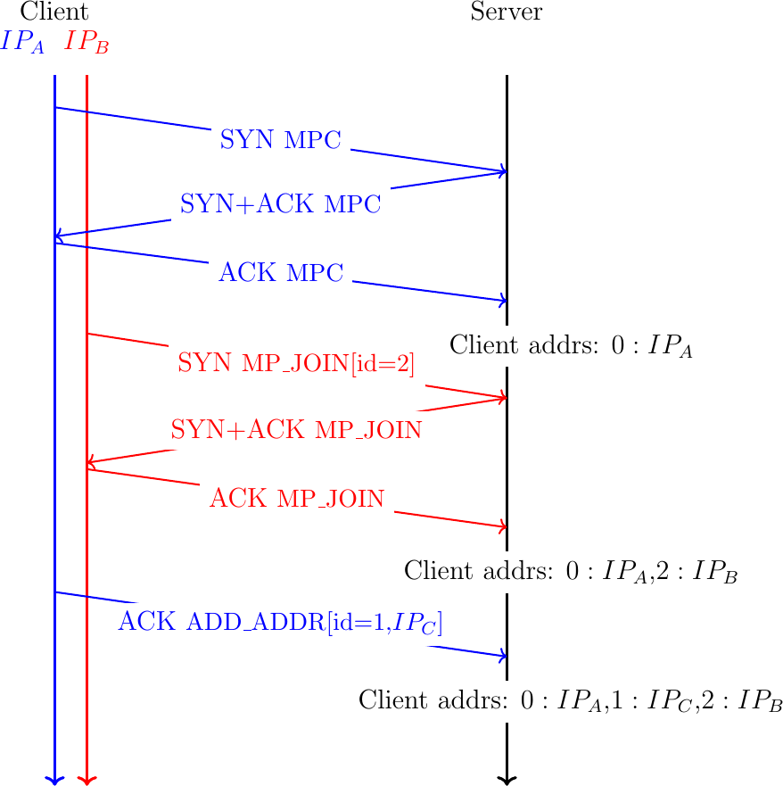
Fig. 26 A Multipath TCP hosts remembers the addresses used by its peer
Note
Is the ADD_ADDR option required on all Multipath TCP hosts ?
The previous section has explained how Multipath TCP hosts learn the addresses of their peers by using the ADD_ADDR and REMOVE_ADDR options. These options are important for a server that has multiple addresses (e.g. an IPv4 and an IPv6 address) and wants to advertise them to its clients. On the other hand, servers rarely create subflows and thus they do not really need to learn the client addresses. In fact, Apple's implementation of Multipath TCP on the iPhones does not use the ADD_ADDR option. iPhones simply create subflows over the cellular and Wi-Fi interfaces as when needed and the server relies on the MP_JOIN option to validate these subflows. It is interesting to note that the REMOVE_ADDR option remains useful even if the ADD_ADDR option is not used. Consider a smartphone that has created an initial subflow over its Wi-Fi interface and a second subflow over the cellular one. If the smartphone looses its Wi-Fi interface, it can send a REMOVE_ADDR option over the subflow that uses the cellular interface to inform the server that it cannot be reached anymore through its Wi-Fi interface.
Data transfer
Thanks to the MP_CAPABLE and MP_JOIN option, Multipath TCP hosts can associate one of more subflows to a Multipath TCP connection. Each host can send and receive data on any of the established subflows. As these subflows follow different paths, packets experience different delays. To preserve the in-order bytestream, the receiver must be able to reorder the data received over the different subflows.
A simple approach to perform this reordering would be to rely on the TCP sequence number that is included in the TCP header. This approach is illustrated in Fig. 27. The client creates two subflows and uses the same initial sequence numbers on the different subflows. The server also selects the same initial sequence numbers. The client then sends three bytes: A over the initial subflow, B over the second subflow and C over the initial one. Each byte has its own sequence number and the receiver can reorder them. However, note that sequence number x+2 is not sent over the initial subflow. Furthermore, sequence numbers x+1 and x+3 are not sent over the second subflow.
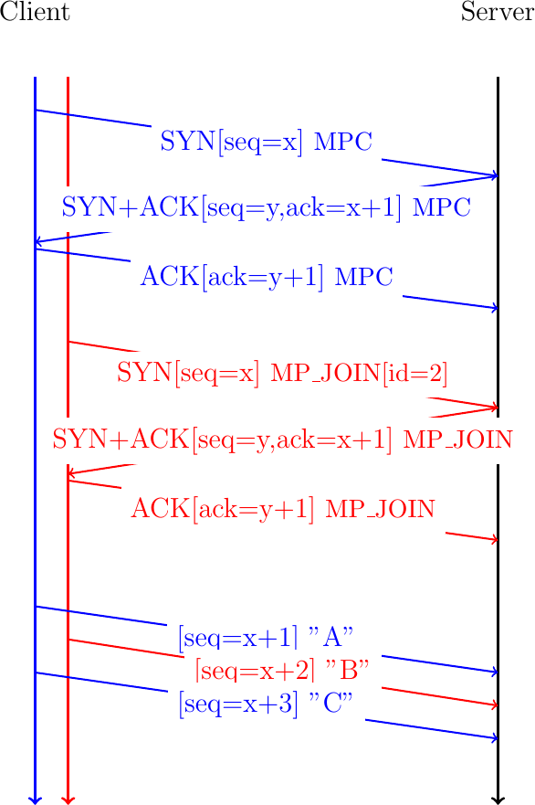
Fig. 27 A naive approach to exchange data over different subflows
Unfortunately, this simple approach suffers from several problems. First, it assumes that the client and the server use the same initial sequence numbers. On the client side, this might be feasible, but on the server side, this would prohibit the utilization of techniques such as SYN cookies that are important to protect from denial of service attacks. Another concern is that there will be gaps in the sequence numbers that are used over each path. These gaps might cause problems with middleboxes such as firewalls. The same problem applies for the acknowledgments. Although TCP supports selective acknowledgments RFC 2018, these were not designed to support a large number of gaps.
Multipath TCP solves these problems by using a second level of sequence numbers that are encoded inside TCP options. Conceptually, Multipath TCP associates a data sequence number to the first byte of the payload of each TCP packet. Each Multipath TCP packet carries two different sequence numbers. The first is the sequence number that is included in the TCP header and is called the subflow sequence number. This sequence number plays the same role as in a regular TCP connection. It enables the receiver to reorder the received packets on a given subflow and detect losses. The data sequence number corresponds to the bytestream. It indicates the position of the first byte of the payload of the TCP packet in the bytestream. This data sequence number is used by the receiver to reorder the data received over different subflows and detect losses at this level. Multipath TCP also uses acknowledgments to confirm the reception of data. At the subflow level these are regular TCP acknowledgments (or selective acknowledgments if this extension is active). At the Multipath TCP connection level, the receiver always returns a data acknowledgment that contains the next expected in-sequence data sequence number. This is illustrated in Fig. 28.
The client sends the first byte of the bytestream over the initial subflow. This byte is sent in a TCP packet whose sequence number is x+1. It carries a Multipath TCP option that contains the data sequence number, i.e. 0 since this is the first byte of the bytestream. The server returns an acknowledgment that indicates that the x+2 is the next expected sequence number over the initial subflow. This TCP ACK also contains a Multipath TCP option that indicates that 1 is the next expected data sequence number. The sends the second byte over the second subflow. For this, it sends a packet whose sequence number is set to w+1, i.e. the first sequence number over this subflow. This packet contains a Multipath TCP option that indicates that this is the second byte (data sequence set to 1) of the bytestream. The server confirms the reception of this packet with an acknowledgment.

Fig. 28 Multipath TCP relies on data sequence numbers and acknowledgments
Fig. 29 shows a slightly different example where the first data packet sent by the client is lost. When the server receives the second byte of the bytestream on the second subflow, it acknowledges it at the subflow level (ack=w+2) but not at the connection level since the previous byte of the bytestream is missing. The server stores the received byte in the reordering buffer associated with the connection. When the server receives the second packet sent over the initial subflow, it stores it in the buffer associated with the initial subflow. Since it has neither received the byte that has sequence number x+1 on the initial subflow, it cannot update its acknowledgment number. It could send a selective acknowledgment if these were enabled on the connection. The retransmission of the first data packet sent over the initial subflow fills the buffer associated to this subflow. The server can thus update the subflow level acknowledgment number (ack=x+2). The data received in order can now be passed to the connection-level buffer. The data at this level is also in-sequence and the server returns a data acknowledgment indicating that the next data sequence number it expects is 3. The three bytes ABC are delivered in sequence to the server application.

Fig. 29 Multipath TCP copes with packet losses
The example of Fig. 29 showed how Multipath TCP copes with packet losses. These are frequent events on a TCP connection. A Multipath TCP only needs to cope with the loss of an entire subflow. Consider the same example as above, but the initial subflow was established over a Wi-Fi interface that stops shortly after the reception of the acknowledgment for the second data packet. The client detects the problem and sends a REMOVE_ADDR over the second subflow. It also retransmits the first packet that had not been acknowledged, but this time over the second subflow.

Fig. 30 Multipath TCP copes with subflow failures
Conceptually, a Multipath TCP implementation can be viewed as composed of a set of queues. On the sender side, the bytestream is pushed in a queue that keeps the data until it has been acknowledged at the connection level. A packet scheduler extracts blocks of data from this queue and places them with the associated date sequence numbers in the per-subflow queues that represent the sending buffers associated to each subflow. TCP uses these per-subflow queues to send the data and perform the retransmission when required. On the receiver side, there is one queue associated with each subflow. This queue corresponds to the TCP receive buffer. TCP uses this queue to reorder the received data based on their TCP sequence numbers, but does not deal with the data sequence numbers that are contained in TCP options. Once data is in-order in a subflow receive buffer, it goes in the connection-level reorder queue that uses the data sequence numbers contained in TCP options to recover the bytestream. Multipath TCP creates the data sequence acknowledgments from the data contained in this buffer. Once data is in-sequence inside this buffer, it is passed to the application through a recv system call.
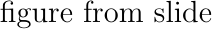
Fig. 31 Architecture of a Multipath TCP implementation
Congestion control
LIA
OLIA
[27]
BALIA
[28]
MPCC
[29]
Connection release
A TCP connection starts with a three-way handshake and ends with either the exchange of FIN packets to gracefully terminate the connection or when one of the hosts sends a RST packet. The main benefit of the graceful termination is that both hosts receive the confirmation that all the data that they have sent over the connection has been correctly received. Multipath also supports a graceful termination of the connection. As in regular TCP, this graceful termination is implemented by using a flag that indicates the end of the bytestream. This flag is included in the Data Sequence Number option.
Fig. 32 illustrates a graceful Multipath TCP connection release. We assume that the connection has two active subflows. The client sends XYZ over the initial subflow. Since this is the last byte sent over the bytestream, it adds the DATA_FIN flag to the data sequence option. This flag consumes one data sequence number as the FIN flag in the TCP header. The server returns an acknowledgment that confirms the reception of the three bytes at the subflow level (ack=x+3). At the connection level, four sequence numbers are acknowledged (a=y+4) since the DATA_FIN flag consumes one sequence number. The server decides to close its bytestream by sending its last byte, M, over the second subflow with the DATA_FIN flag set. At this point, the Multipath TCP has been gracefully closed. No data will be exchanged over the different subflows. The client and/or the server can terminate the subflows by using packets with either the FIN or the RST flag in the TCP header.

Fig. 32 Graceful termination of a Multipath TCP connection
The main drawback of exchanging DATA_FINs to terminate a Multipath TCP is that this takes time. Busy servers might not be willing to spend a long time waiting for the exchange of all these packets if the application already guarantees the correct delivery of the data. A regular TCP server would send a RST packet to quickly terminate such a connection. However, such RST packets can lead to denial of service attacks [30]. A regular TCP receiver mitigates these attacks by checking the sequence number of the RST packet [31]. The Multipath TCP designers did not consider this approach to be safe since an attacker who is able to observe the packets on one path could send a RST packet that would terminate all the subflows used by the connection.
To still allow a host to quickly terminate a Multipath TCP connection, Multipath TCP must be able to verify the validity of a packet that terminates a connection. For this, Multipath TCP defines the FAST_CLOSE option that includes a 64 bits security key. These keys are exchanged during the initial handshake and included in the state associated to a Multipath TCP connection. To quickly close a connection, a host simply needs to send the key of the remote host in a FAST_CLOSE option sent over one of the active subflows. The Multipath TCP specification defines two different methods to use the FAST_CLOSE option.
The first solution is to send the FAST_CLOSE option inside an ACK. Upon reception of such a packet, a host sends a RST over all active subflows. This is illustrated in Fig. 33.

Fig. 33 Abrupt release of a Multipath TCP connection by sending FAST_CLOSE inside an ACK
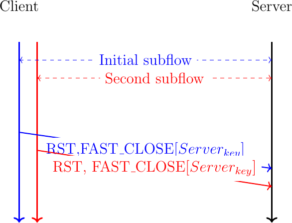
Fig. 34 Abrupt release of a Multipath TCP connection by sending a RST with FAST_CLOSE on all subflows
Coping with middlebox interference
The previous sections have explained how Multipath TCP operates at a high level. They assume a simple network that is mainly composed of hosts, switches and routers. TCP and Multipath TCP are used by the hosts. They rely on IP packets that contain the TCP segments. These packets are forwarded by IP routers and possibly switches at layer-2 before reaching their final destination. In a network that uses layered protocols, the switches only inspect the layer-2 headers, the routers only read and change the layer-2 and layer-3 headers. Neither the switches nor the routers read or modify the payload of the packets that they forward. Unfortunately, this assumption is not true on the global Internet and in enterprise networks. Besides switches and routers, these networks contains other types of equipment that process packets [32]. These devices are usually called middleboxes because they reside in the middle of the network and process packets in different ways. A detailed survey of all the different types of middleboxes is outside the scope of this document. We discuss below some of the popular middleboxes and analyze how they have influenced the design of Multipath TCP.
Our first middlebox is a firewall. A firewall is a device that receives packets, analyzes their contents and then forwards or blocks the packet. The simplest firewalls are the stateless firewalls that accept or reject each individual packet. Such a firewall can accept packet based on the source or destination addresses or port numbers. Some firewalls also check the flags or the IP header or reassemble the received packet fragments. Others analyze the TCP header and verify the utilization of the TCP options. A firewall can be configured using a white list or a black list. A white list specifies all the packet fields that are valid and all the others are invalid. On the other hand, a black list specifies the packets that must be rejected by the firewall and all the others are accepted. Many firewalls use a small white list that defines the TCP options that the firewall accepts. This list typically includes the widely deployed options such as MSS [4], timestamps [33], windows scale [34] and selective acknowledgments [12]. TCP options are encoded using the Kind, Length, Value format shown in Fig. 35.
Fig. 35 Generic format for TCP options
It is interesting to explore how such a firewall reacts when it receives a packet containing a TCP option that is not part of its whitelist. There are two possibilities. Some firewalls simply drop the packet, but this blocks a connection that could be totally legitimate. Other firewalls remove the option from the TCP header. This can be done by either removing the bytes that contain the unknown TCP option, adjust the Length field of the IP header, the TCP Header length (and possibly update the padding) and update the TCP checksum. A simpler approach is to replace the bytes of the option with byte 1. This corresponds to the standard No-Operation TCP option [4]. The advantage of this approach is that the firewall only has to recompute the TCP checksum and does not need to adjust the packet length and move data.
The removal of TCP options by firewalls has influenced the design of Multipath TCP. Multipath TCP uses TCP options to exchange different types of information. The information carried in a SYN is not the same as the one exchanged in data packets. The selective acknowledgments TCP extension [12] defines two different options: a two bytes long SACK permitted that is used inside SYN and a variable length SACK option that carries the selective acknowledgments during the data transfer. The first versions of Multipath TCP used a similar approach with different TCP options kinds. However, the Multipath TCP designers feared that some firewalls could accept some of the Multipath TCP options and drop the others. For example, the Multipath TCP option used in the SYN could pass a firewall that would later drop the options used in data packets. It would have been very difficult for a Multipath TCP implementation to deal with all the corner cases that could happen since Multipath TCP [15] currently defines 9 different options. To prevent such problems, Multipath TCP uses a single TCP option kind and each Multipath TCP option contains a subtype field. This increases the length of the Multipath TCP options, but minimizes the risk of middlebox interference.

Fig. 36 The generic format for Multipath TCP options
Before looking at other middleboxes, it is interesting to analyze how a router forwards an IP packet that contains a TCP segment. Consider a router that receives a packet such as the one shown in Fig. 37. When a router forwards such a packet, it will read the IP header and may modify the fields highlighted in red:
the Differentiated Services Codepoint (DSCP)
the Explicit Congestion Notification flags (the CE bit)
decrement the Time to Live
update the IP header checksum
A router will never change any other field of the IP header and will not read the packet payload.
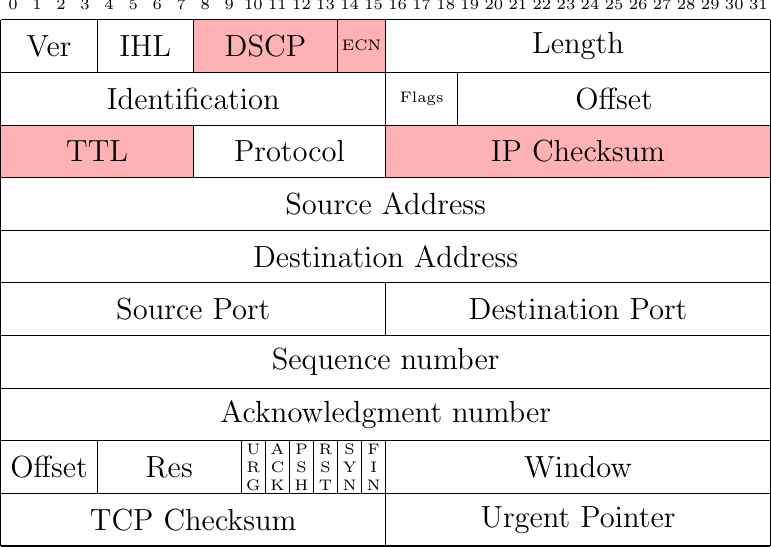
Fig. 37 Fields of an IPv4 packet carrying a TCP segment which can be modified by a router
Today, most TCP stacks set the Don't Fragment flag when sending TCP packets. This implies that IPv4 routers will not fragment the packet. Even if a router fragments an IPv4 packet, this is transparent for the TCP stack since the IP stack on the receiver will reassemble the packet before passing its contents to TCP.
Unfortunately, deployed networks also contain Network Address Translators (NAT) [35]. We consider three different types of NATs because they interfere in different ways with TCP extensions such as Multipath TCP. A NAT is usually located at the boundary between a private network and the Internet. The hosts of the private network use private IP addresses [36] and the NAT is configured with a pool of public addresses. When the NAT receives an IP packet from a host in the private network, its maps the source IP address to a public one and rewrites the packet before forwarding it to the public Internet. When the NAT receives a packet from the Internet, it checks if there is a mapping for the packet's destination address. If so, the destination address is translated and the packet is forwarded to the private host.
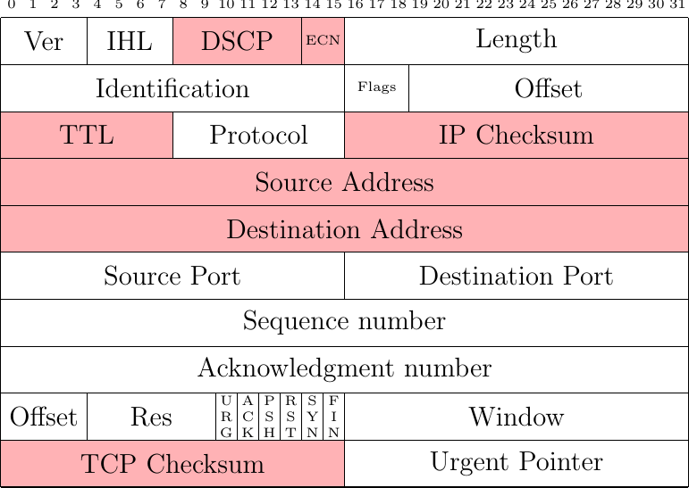
Fig. 38 Fields of an IPv4 packet carrying a TCP segment which can be modified by a simple NAT
As illustrated in Fig. 38, this NAT updates the source or destination address of the packet depending on the packet direction. This modification forces the NAT to recompute the IP checksum but also the TCP checksum since it covers the TCP packet and a pseudo header that includes the IP addresses [4]. In practice, these two checksums are incrementally updated [35] and do not need to be recomputed.
Multipath TCP copes with these NATs by associating an identifier to each address that is used to create a subflow or advertise an address using the ADD_ADDR option. NAT are not aware of these identifiers and they do not modify them. The REMOVE_ADDR option only contains the identifier of the address that was removed. With this information, the receiver of the option can easily determine the affected subflows.
Most NAT deployments, in particular with IPv4, use a pool a public addresses that is much smaller than the set of private addresses that need to be mapped. These middleboxes also need to translate the source ports used by the internal hosts to map different private addresses to the same public addresses. These Network Address and Port Translators (NAPT) also modify the source or destination ports in the same way as they modify the addresses. Multipath TCP copes with simple NAPTs as with simple NATs. Unfortunately, most NATs and NAPTs also include Application-Level Gateways (ALG). ALGs were designed to enable applications such as the File Transfer Protocol (FTP) [37] to be used through NATs and NAPTs. FTP and a few other protocols use IP addresses as parameters of the application-level messages that are exchanged within the bytestream. A simple FTP session is shown in Listing 5. In contrast with many application-level protocols, FTP uses several TCP connection. A FTP sessions starts with a TCP connection established by the client. This connection is called the control connection [37]. This connection is used to exchange simple commands and the associated responses. The client issues commands such as USER (to indicate the client username) or PASS (to provide a password) as a single ASCII line sent over this connection. The server replies with one line that starts with a decimal number that indicates the success of the failure of the command and a textual explanation. However, this is not the only connection used between the client and the server. The client and the server also use data connections. If the client wants to retrieve a file or simply list the names of the files in a given directory, it needs to issue two successive commands. The first command (PORT) indicates the data connection that will be used to exchange the result of the subsequent command. The client listens on a local port and provides its IP address and port number as parameters of the PORT command. Upon reception of this command, the server establish a TCP connection towards the port specific by the client. If the client is behind a NAT, its private IP address and the local port must be translated by the NAT to support the establishment of a server-initiated connection.
#ftp -4d ftp.belnet.be
Connected to ftp-brudie.belnet.be.
220-Welcome to the Belnet public FTP server ftp.belnet.be !
All access is logged.
Currently used storage capacity : 38T / 100T on /ftp
220 193.190.198.27 FTP server ready
Name (ftp.belnet.be): anonymous
---> USER anonymous
331 Anonymous login ok, send your complete email address as your password
Password:
---> PASS XXXX
230 Anonymous access granted, restrictions apply
---> SYST
215 UNIX Type: L8
Remote system type is UNIX.
Using binary mode to transfer files.
ftp> dir
---> PORT 192,168,0,37,133,67
200 PORT command successful
---> LIST
150 Opening ASCII mode data connection for file list
lrw-r--r-- 1 ftp ftp 16 Feb 24 2021 arcolinux -> mirror/arcolinux
drwxr-xr-x 3 ftp ftp 101 Jan 12 2021 belnetstyle
lrw-r--r-- 1 ftp ftp 13 Feb 1 2021 debian -> mirror/debian
226 Transfer complete
ftp> quit
---> QUIT
221 Goodbye.
It is interesting to analyze how an ALG modifies a packet that carries such a PORT command. Let us assume that the PORT 192,168,0,37,133,67 command is sent in a single TCP packet for simplicity. Fig. 39 shows the contents of the packet sent by the client. Fig. 40 shows the packet after its translation by the NAT, assuming that the NAT maps IP address 192.168.0.37 onto address 5.6.7.8. The packet sent by client contains 26 bytes of payload. The IP packet is thus 66 bytes long.

Fig. 39 Packet carrying a PORT command sent by a client
The PORT 192,168,0,37,133,67 indicates that the client listens on IP address 192.168.0.37 and on port \(133*256+67=34115\). Let us assume that the NAT maps this IP address on address 5.6.7.8 and port 34115 on port \(31533=123*256+45\). In ASCII, the PORT command becomes PORT 5,6,7,8,123,45 and the NAT sends the packet shown in Fig. 40. The fields shown in red have been translated by the NAT. An important point to note contains 21 bytes of payload and not 66 as the packet sent by the client. This implies that the packet sent by the NAT contains the bytes having sequence numbers 12300 to 12320 while the original packet covered sequence numbers 12300 to 12325. The NAT will thus need to adjust the sequence number of the subsequent packets sent by the client and also the acknowledgments returned by the server.

Fig. 40 Packet carrying a PORT command modified by the FTP ALG used by a NAT
As shown by the example above, an ALG can change bytes in the bytestream. It can also remove bytes from the bytestream and also add bytes in the bytestream. This happens notably when the ASCII representation of the public IP address of the NAT is longer than the private IP address of the internal host. This modification of the bytestream had a major impact on the design of Multipath TCP. It mainly affects the Data Sequence Number option that carries the data sequence numbers and acknowledgments. To detect modifications from ALGs and other middleboxes, this option covers a range of sequence numbers in the bytestream and includes an optional checksum that is computed by the Multipath TCP sender and checked by the receiver. If there is a mismatch between the checksum of the option and the data, the receiver stops using Multipath TCP and falls back to regular TCP to preserve the established connection. We discuss this fallback in more details later.
Our third type of middlebox that splits or coalesces TCP packets. This is not a router that performs IPv4 fragmentation or a host that splits a large IPv6 packets in fragments. In-network fragmentation is mainly disabled in IPv4 network since modern TCP stacks set the DF flag of the IP header. Those middleboxes do not reside in the middle of the network. They are typically included in the network adapter used by servers and even client hosts. Measurement studies have shown that hosts can reach a higher throughput when sending and receiving large packets. For example, a recent study [38] reveals that over a 100 Gbps interface, a server was able to reach 25 Gbps with a single TCP connection using 1500 bytes packets. The same connection reached 40 Gbps by using jumbo frames, i.e. 9000 bytes packets. The jumbo frames are supported on modern Gigabit Ethernet networks but they are rarely used outside datacenters because most Internet paths still only supports 1500 bytes packets.
Modern network adapters support TCP Segmentation Offload (TSO) to improve the throughput of TCP connection are reduce the CPU load. In a nutshell, when TSO is enabled, the network adapter exposes a large maximum packet size, e.g. 16 KBytes to more, to the network stack. When the host sends such a large packet, it is automatically segmented in a sequence of small IP packets. On the receiver side, the network adapter performs the reverse operation. It coalesces small received packets into a larger one. Fig. 41 shows a large (2 KBytes long) TCP packet. It is interesting to analyze how the key fields of this packet will be processed by TSO to segment it in the two smaller packets.

Fig. 41 A large IP packet containing TCP header and data
To segment the packet shown in Fig. 41 in two smaller packets, TSO creates two 1040 bytes long IPv4 packets. The two small packets have a different IP Identification than the large one. TSO computes an IP checksum for each small packet. It then copies the TCP header of the large packet in both small ones, but with a fed adjustments. The sequence number of the first small packet is the same as the large one. The sequence number of the sequence small packet is the one of the first packet increased by 1000.
Concerning the TCP options, TSO could analyze the contents of the option and handle each option in a specific manner. For example, TSO could adjust the TCP timestamp option of successive packets. In practice, measurements indicate that TSO simply copies the TCP options field of the large packet in all small packets [39]. TSO places the first 1000 bytes of the payload of the large packet in the first small one and the last 1000 bytes in the second one. Finally, TSO needs to update the TCP checksum in all the small packets.
The receiver side of these network adapters implement Large Receive Offload (LRO). This basically coalesces the packets that were segmented by TSO. In this case, coalescing packets that carry different TCP options could be problematic since some of the TCP options would be lost in this process. Measurements with different TCP options show that LRO only coalesces packets that have exactly the same set of TCP implementations.
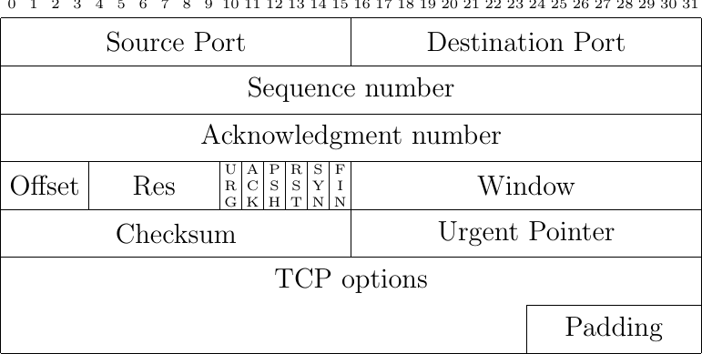
Fig. 42 The TCP header
The protocol details

Fig. 43 The MP_JOIN option in a SYN packet

Fig. 44 The MP_JOIN option in a SYN+ACK packet

Fig. 45 The MP_JOIN option in the initiator's first ACK
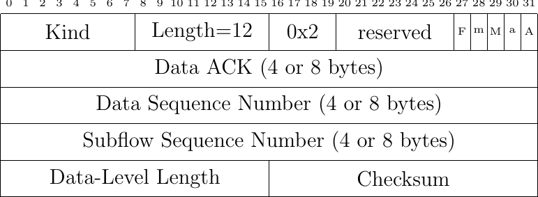
Fig. 46 The Data Sequence Signal option
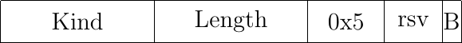
Fig. 47 The MP_PRIO option

Fig. 48 The ADD_ADDR option

Fig. 49 The REMOVE_ADDR option
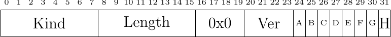
Fig. 50 The MP_CAPABLE option in a SYN packet
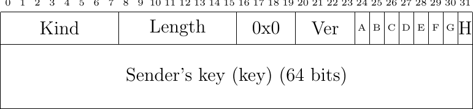
Fig. 51 The MP_CAPABLE option in SYN+ACK packet

Fig. 52 The MP_CAPABLE option in initiator's first ACK (without data)
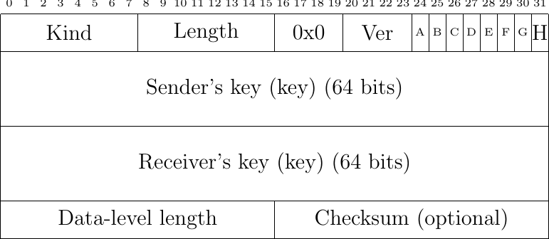
Fig. 53 The MP_CAPABLE option in initiator's first ACK (with data)
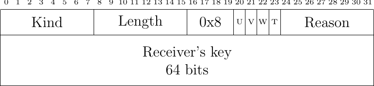
Fig. 54 The MP_TCPRST option

Fig. 55 The FAST_CLOSE option